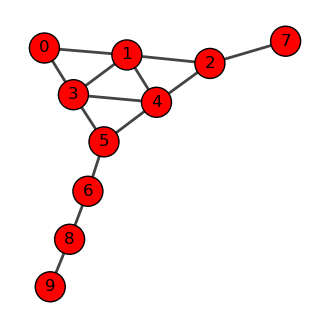

Random Walks Concepts
1 What is a random walk?
Suppose you walk in a city. You are drunk and your feet have no idea where to go. You just take a step wherever your feet take you. At every intersection, you make a random decision and take a step. This is the core idea of a random walk.
While your feet are taking you to a random street, after making many steps and looking back, you will realize that you have been to certain places more frequently than others. If you were to map the frequency of your visits to each street, you will end up with a distribution that tells you about salient structure of the street network.
Random walks appear everywhere in daily life:
- Netflix browsing: You click on a movie, then another recommended movie, then another… Your viewing pattern follows a random walk through the recommendation network!
- Wikipedia surfing: Starting from “Coffee”, you click links to “Brazil” → “Soccer” → “Mathematics” → “Physics”… Each click is a step in a random walk through knowledge.
- Stock market movements: Daily price changes can be modeled as random walks, where each day’s price depends on the previous day plus some random fluctuation.
2 Introduction through Games: Ladder Lottery
To make random walk concepts tangible, let’s start with a fun game that perfectly illustrates random walk principles:
Ladder Lottery
Ladder Lottery is a fun East Asian game, also known as “鬼腳圖” (Guijiaotu) in Chinese, “阿弥陀籤” (Amida-kuzi) in Japanese, “사다리타기” (Sadaritagi) in Korean, and “Ladder Lottery” in English. The game is played as follows: 1. A player is given a board with a set of vertical lines. 2. The player chooses a line and starts to move along the line 3. When hitting a horizontal line, the player must move along the horizontal line and then continue to move along the next vertical line. 4. The player wins if the player can hit a marked line at the bottom of the board. 5. You cannot see the horizontal lines in advance!
Play the Ladder Lottery Game! üéÆ‚ú® and try to answer the following questions:
- Is there a strategy to maximize the probability of winning?
- How does the probability of winning change as the number of horizontal lines increases?

The Ladder Lottery game is actually a perfect introduction to random walks! In this game, states are the vertical lines, transitions happen when you encounter horizontal connections, randomness comes from not knowing where the horizontal lines are placed, and long-term behavior determines your probability of winning. This simple game illustrates many key concepts we’ll explore in random walks on networks.
A random walk in undirected networks follows this process: 1. Start at a node i 2. Randomly choose an edge to traverse to a neighbor node j 3. Repeat step 2 until you have taken T steps
In directed networks, a random walker can only move along the edge direction, and it can be that the random walker is stuck in a so-called “dead end” that does not have any outgoing edges.

When studying random walks, we want to understand several key aspects: short-term behavior (where does the walker go in the first few steps?), long-term behavior (after many steps, where does the walker spend most of its time?), structural insights (what does the walker’s behavior tell us about the network?), and applications (how can we use random walks for centrality and community detection?).
Interactive Exploration
Play with the Random Walk Simulator! üéÆ‚ú® and try to answer the following questions:
- When the random walker makes many steps, where does it tend to visit most frequently?
- When the walker makes only a few steps, where does it tend to visit?
- Does the behavior of the walker inform us about centrality of the nodes?
- Does the behavior of the walker inform us about communities in the network?
Pen and Paper Exercises
Before diving into the mathematical details and coding, it’s important to work through some fundamental concepts by hand.
These exercises will help you: - Understand the basic mechanics of random walks - Calculate transition probabilities manually - Explore simple examples of stationary distributions - Connect random walk concepts to network properties
3 Transition Probabilities
Let’s see how this works with a more complex example. Consider a network with 10 nodes:
Let us consider the following graph.
The transition matrix is given by:

A random walk is characterized by the transition probabilities between nodes. The transition probability from node i to node j is:
P_{ij} = \frac{A_{ij}}{k_i}
where A_{ij} is the adjacency matrix element and k_i is the degree of node i.
We can represent all transition probabilities in a transition probability matrix \mathbf{P}:
\mathbf{P} = \begin{pmatrix} p_{11} & p_{12} & \cdots & p_{1N} \\ p_{21} & p_{22} & \cdots & p_{2N} \\ \vdots & \vdots & \ddots & \vdots \\ p_{N1} & p_{N2} & \cdots & p_{NN} \end{pmatrix}
This matrix \mathbf{P} encapsulates the entire random walk process. We can use it to calculate the probability of visiting each node after any number of steps:
- After one step: P_{ij} = p_{ij}
- After two steps: \left(\mathbf{P}^{2}\right)_{ij} = \sum_{k} P_{ik} P_{kj}
- After T steps: \left(\mathbf{P}^{T}\right)_{ij}
Let’s understand why \mathbf{P}^2 represents the transition probabilities after two steps.
First, recall that \mathbf{P}_{ij} is the probability of moving from node i to node j in one step. Now, consider a two-step walk from i to j. We can express this as:
(\mathbf{P}^2)_{ij} = \sum_k \mathbf{P}_{ik} \mathbf{P}_{kj}
This equation encapsulates a key idea: to go from i to j in two steps, we must pass through some intermediate node k. Let’s break this down step by step:
- The probability of the first step (i to k) is \mathbf{P}_{ik}.
- The probability of the second step (k to j) is \mathbf{P}_{kj}.
- The probability of this specific path (i → k → j) is the product \mathbf{P}_{ik} \mathbf{P}_{kj}.
- We sum over all possible intermediate nodes k to get the total probability.
And we can extend this reasoning for any number of steps t. In summary, for any number of steps t, \left( \mathbf{P}^t \right)_{ij} gives the probability of being at node j after t steps, starting from node i.
4 Stationary Distribution
Let’s compute \mathbf{P}^2 for our larger network to see what happens after 2 steps:
This is after 10 steps.
This is after 1000 steps.

Stationary distribution is the probability distribtion of the walker after infinite steps, representing the long-term behavior of the walker.
Assuming that a stationary distribution exists (i.e., which is always true for undirected networks), the random walker at the stationary state must satisfy the following balance condition:
x(t+1) = x(t) \; \text{for a large } t, where x(t) is the probability distribution of the walker at time t, represented as a column vector, where
x(t) = \begin{pmatrix} x_{i}(t) \\ x_{j}(t) \\ \vdots \\ x_{N}(t) \end{pmatrix}
where x_{i}(t) is the probability of being at node i at time t. The balance condition means that the system becomes time invariant, meaning that the probability of being at node i at time t is the same as the probability of being at node i at time t+1.
What does x(t) look like in the stationary state? To understand this, let us represent x(t) using P and an initial distribution x(0), i.e.,
x(t) = x^\top(t-1) P = x^\top(0) P^t.
To see how P^t looks like, see the figure on the right column. Notice that each column of P^t has the same values across all rows. Remind also that P_{ij} represents the transition probability from node i (row) to node j (column). This means that a random walker at time t, not matter where it was at time t-1, it will have the same probability of being at any node at time t!
Now, why P^t has this peculiar property? This is because of the spectral property of matrix, P.
First of all, we can rewrite the balance condition as the following eigenvalue equation: \pi = \pi P where \pi=\lim_{t\to\infty} x(t) is the stationary distribution. This means that the stationary distribution vector \pi is parallel to the left eigenvector of P.
Note
Note that \pi is parallel to but not necessarily equal to the left eigenvector of P, as \pi is a probability whose sum is 1 while the left eigenvector has unit norm (i.e., the sum of the squared elements is 1).
The left-eigenvector associated with the stationary distribution \pi is in fact associated with the largest eigenvalue of P, as per the Perron-Frobenius theorem. An intuition behind this is that the number of walkers in a graph remains invariant after a transition, which is evident from the fact \sum_{j} P_{ij}=1 (if it’s greater than 1, the number of walkers increases and explodes to infinity). In language of spectra of matrices, this means that the eigenvalue is not rescaled by the transition matrix, which mathematically corresponds to having eigenvalue 1.
The other eigenvalues are less than one in magnitude and describes the short-term behavior of random walks, which we will discuss in the next section.
5 Spectral Analysis and Mixing Time
Now, let’s turn our attention to the short-term dynamics of random walks. These are governed by the non-dominant (non-principal) eigenvectors of the transition probability matrix P. To analyze this behavior, we’ll need to use some concepts from linear algebra.
The short-term behavior of random walks is described as:
x(t) = P^t x(0)
Thus, it is determined by the initial distribution x(0) and the power of the transition probability matrix P^t. In long term, P^t approaches to that for the stationary distribution \pi. Here we focus on the ehavior before the equilibrium is reached.
To understand the short-term behavior, we represent P as: P = \mathbf{D}^{-\frac{1}{2}} \overline{\mathbf{A}} \mathbf{D}^{\frac{1}{2}}
where \overline{\mathbf{A}} is a symmetric matrix and \mathbf{D}^{-\frac{1}{2}} is a diagonal matrix. These are defined respectively as follows.
Diagonal degree matrix, \mathbf{D}: we define a diagonal matrix whose diagonal elements are the degrees of the nodes, i.e., \mathbf{D} = \begin{pmatrix} d_1 & 0 & \cdots & 0 \\ 0 & d_2 & \cdots & 0 \\ \vdots & \vdots & \ddots & \vdots \\ 0 & 0 & \cdots & d_N \end{pmatrix} where d_i is the degree of node i.
Normalized adjacency matrix, \overline{\mathbf{A}}: we define a normalized adjacency matrix whose elements are the normalized adjacency matrix, i.e., \overline{\mathbf{A}} = \mathbf{D}^{-\frac{1}{2}} \mathbf{A} \mathbf{D}^{-\frac{1}{2}} where \mathbf{A} is the adjacency matrix. It is normalized in the sense that each entry is normalized by the squared root of the degree of the nodes.
The key property we will leverage is that the normalized adjacency matrix is diagonalizable, i.e., \overline{\mathbf{A}} = \mathbf{Q} \mathbf{\Lambda} \mathbf{Q}^T
where \mathbf{Q} is an orthogonal matrix and \mathbf{\Lambda} is a diagonal matrix. The transition matrix \mathbf{P} can be written as: \mathbf{P} = \mathbf{Q}_L \mathbf{\Lambda}^t \mathbf{Q}_R^T

Symmetric matrices are diagonalizable. And \overline{\mathbf{A}} is symmetric as far as the undirected network is considered.
where \mathbf{Q}_L = \mathbf{D}^{-\frac{1}{2}} \mathbf{Q}, \quad \mathbf{Q}_R = \mathbf{D}^{\frac{1}{2}} \mathbf{Q}. Importantly, \mathbf{Q} is an orthogonal matrix, i.e., \mathbf{Q} \mathbf{Q}^T = \mathbf{I}. Putting all together, we can compute \mathbf{P}^t as:
\mathbf{P}^t = \mathbf{Q}_L \mathbf{\Lambda}^t \mathbf{Q}_R^T
This could be understood by thinking of \mathbf{P}^2, i.e.,
\begin{aligned} \mathbf{P}^2 & = \mathbf{Q}_L \mathbf{\Lambda} \underbrace{\mathbf{Q}_R^T \mathbf{Q}_L}_{= \mathbf{I}} \mathbf{\Lambda} \mathbf{Q}_R^T \\ & = \mathbf{Q}_L \mathbf{\Lambda}^2 \mathbf{Q}_R^T \\ \end{aligned}
Armed with this result, let us understand the short-term behavior of random walks. A key property is the mixing time, which is the time it takes for the random walk to reach the stationary distribution. Formally, the mixing time t_{\text{mix}} is defined as t_{\text{mix}} = \min\{t : \max_{\mathbf{x}(0)} \|\mathbf{x}(t) - \boldsymbol{\pi}\|_{1} \leq \epsilon\}
It is not trivial to connect with this definition to the spectral properties of \overline{\mathbf{A}}. But, since the transition matrix \mathbf{P} is determined by the eigenvalues and eigenvectors of the normalizsed adjacency matrix \overline{\mathbf{A}}, the mixing time is determined by the eigenvalues of \overline{\mathbf{A}}, in particular the second largest eigenvalue \lambda_2, which dominates in \mathbf{P}^t following the principal eigenvector \pi. In fact, the mixing time is bounded by the second largest eigenvalue.
t_{\text{mix}} < \frac{1}{1-\lambda_2} \log \left( \frac{1}{\epsilon \min_{i} \pi_i} \right)
An alternative represention is to use the second smallest eigenvalue \mu of the normalized Laplacian matrix:
t_{\text{mix}} \leq \frac{1}{\mu}
where \mu = 1-\lambda_2.
6 Community Detection through Random Walks
Random walks can reveal community structure in networks. Before reaching the steady state, walkers tend to remain within their starting community, then gradually diffuse to other communities. This temporal behavior provides insights into the network’s modular structure.
Random Walk Interpretation of Modularity
Modularity can be interpreted through random walks (Delvenne, Yaliraki, and Barahona 2010):
Q = \sum_{ij} \left(\pi_i P_{ij} - \pi_i \pi_j \right) \delta(c_i, c_j)
where: - \pi_i = \frac{d_i}{2m} is the stationary distribution of the random walk - P_{ij} is the transition probability between nodes i and j - \delta(c_i, c_j) is 1 if nodes i and j are in the same community, 0 otherwise
The expression suggests that: 1. The first term, \pi_i P_{ij} \delta(c_i, c_j), represents the probability that a walker is at node i and moves to node j within the same community by one step. 2. The second term, \pi_i \pi_j, represents the probability that a walker is at node i and moves to another node j within the same community after long steps.
High modularity indicates walkers are more likely to stay within communities in the short term than in the long term.
(Delvenne, Yaliraki, and Barahona 2010) extends the modularity to the case of multi-step random walks, which can identify communities across different resolution scales.
Infomap: Information-Theoretic Community Detection
While modularity provides one approach to community detection through random walks, Infomap offers an information-theoretic perspective (Rosvall and Bergstrom 2008, 2009).
Infomap asks: How can we most efficiently describe the path of a random walker through a network? The key insight is that if a network has strong community structure, a random walker will spend most of its time within communities, making short jumps between communities. This pattern can be compressed efficiently using a two-level code:
- Module code: A unique identifier for each community
- Exit code: A special symbol indicating when the walker leaves a community
- Node code: Identifiers for nodes within each community
By compressing the trajectory of random walks, Infomap can find a community structure that minimizes the average bits needed to describe the random walk.

References
Delvenne, J-C, Sophia N Yaliraki, and Mauricio Barahona. 2010. “Stability of Graph Communities Across Time Scales.” Proceedings of the National Academy of Sciences 107 (29): 12755–60.
Rosvall, M., and C. T. Bergstrom. 2008. “Maps of random walks on complex networks reveal community structure.” Proceedings of the National Academy of Sciences 105 (4): 1118–23. https://doi.org/10.1073/pnas.0706851105.
———. 2009. “The map equation.” The European Physical Journal Special Topics 178 (1): 13–23. https://doi.org/10.1140/epjst/e2010-01179-1.